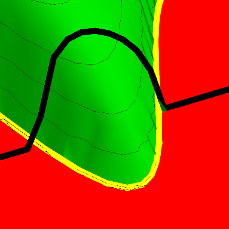

|
I am a Ph.D. student in the Electrical and Computer Engineering Department at Rice University, advised by Dr. Xaq Pitkow at the Laboratory for the Algorithmic Brain. Before joining Rice, I worked as a Research Assistant with Dr. Kaushik Mitra at IIT Madras and Dr. R. Venkatesh Babu at IISc. My work there was on deep learning algorithms for computer vision and computational imaging. Email / CV / Google Scholar / Linkedin / Twitter |
{kind=link}
|
I'm interested in reinforcement learning, computational neuroscience, deep learning, and machine learning. My current research focuses on applying reinforcement learning to model animal foraging. |
|  |
Lokesh Boominathan, Xaq Pitkow NeurIPS, 2022 arXiv / video We developed a normative theory of resource-constrained brain inference that generalizes the theory of Predictive Coding by showing that there exist phase transitions in when feedback messages are helpful/harmful. |
|
|
Lokesh Boominathan, Mayug Maniparambil, Honey Gupta, Rahul Baburajan, Dr. Kaushik Mitra BMVC, 2018 arXiv We developed a deep learning based phase retrieval algorithm for Fourier Ptychographic Microscopy that is fast and requires fewer acquisitions than traditional phase retrieval algorithms. |
|
|
Lokesh Boominathan, Srinivas S S Kruthiventi, Dr. R. Venkatesh Babu ACM Multimedia, 2016 (500+ citations in Google Scholar) arXiv We developed a deep learning algorithm for estimating crowd density from static images of highly dense crowds. |
|
|
Lokesh Boominathan, Suraj Srinivas, Dr. R. Venkatesh Babu ICVGIP, 2016 arXiv We developed an algorithm using deep neural networks and Bayesian optimization to compensate for large in-plane rotations present in photographs. |